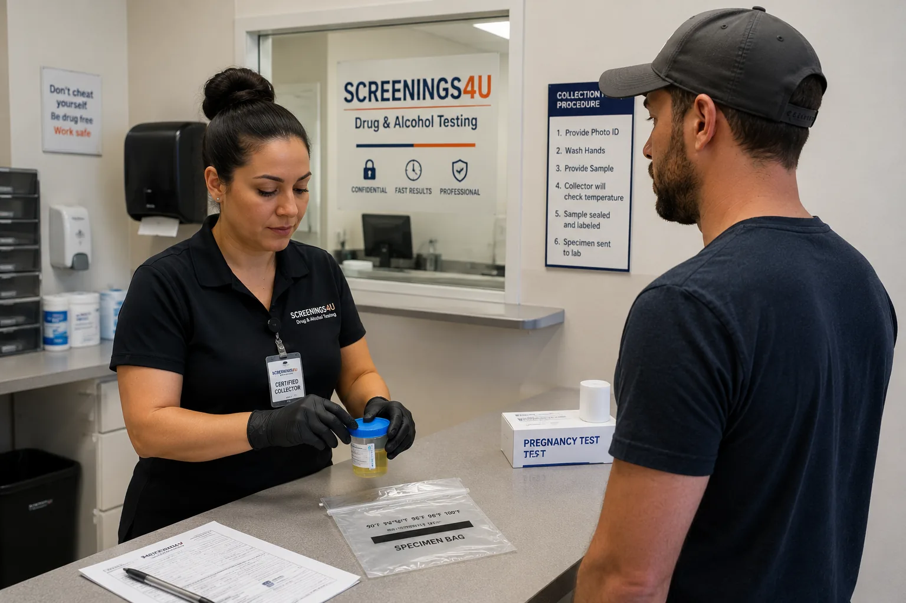
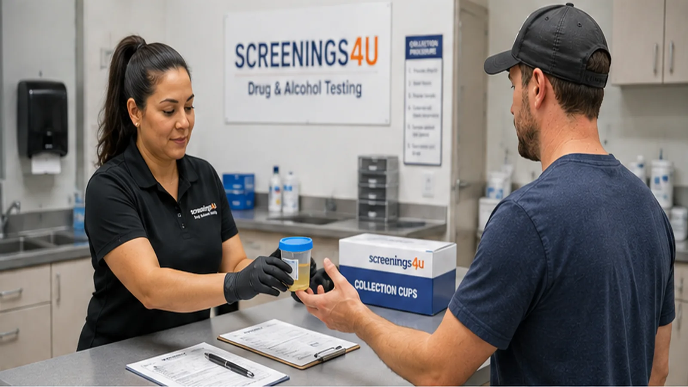

Tailored CCFs
Chain of Custody Forms tailored specifically to your business's drug and alcohol testing needs.
Set up a House Lab Account with screenings4u and gain access to supplies, tailored CCFs, Workforce Portal tools, testing support, and optional random consortium management.

Professional testing infrastructureA House Lab Account gives independent collection sites, laboratories, and workplace testing providers a streamlined way to manage testing operations from one central relationship.
From collection supplies and Chain of Custody Forms to portal access and result management, screenings4u provides infrastructure designed to support your clients and grow your testing services.

Build a stronger testing operation with tools and support designed for collection professionals and testing providers.
Chain of Custody Forms tailored specifically to your business's drug and alcohol testing needs.
Collection kits and essential supplies delivered to help keep your testing operations ready.
Access professional Medical Review Officer services for appropriate verification support.
Straightforward account options designed to make startup and operational costs easier to understand.
Streamline important testing logistics and reduce unnecessary administrative burden.
Support for collectors and testing providers across multiple testing types and service needs.
Access a dedicated portal to help manage testing information and support your business workflow.
View and download available test results through your portal once they are processed.
Select account options that include support for creating and managing random testing pools and consortium groups.
Select the account option that matches the services and compliance support you need for your operation.
Professional lab account setup
Lab account plus consortium support
Expanded compliance support
Get started with a professional account and build the foundation for your testing operation.
Select the House Lab Account option that best fits your current business needs.
Provide the required information so your account setup can begin.
Your account resources, supplies, and available portal access are prepared for your operation.
Begin using your testing infrastructure to support your employer and testing clients.
Common questions about setting up and using a House Lab Account with screenings4u.